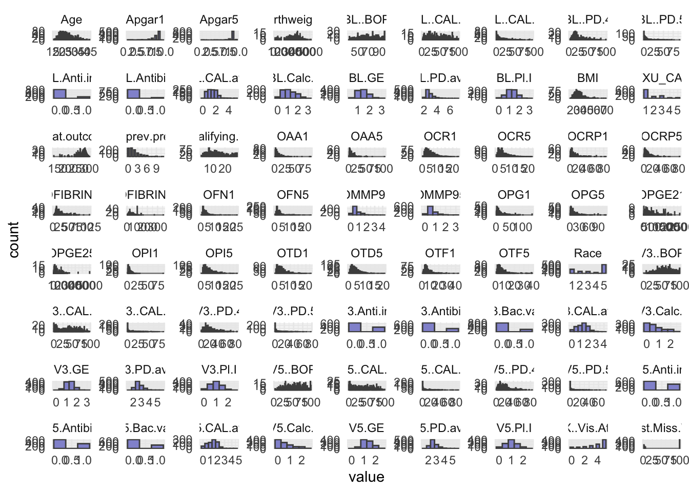
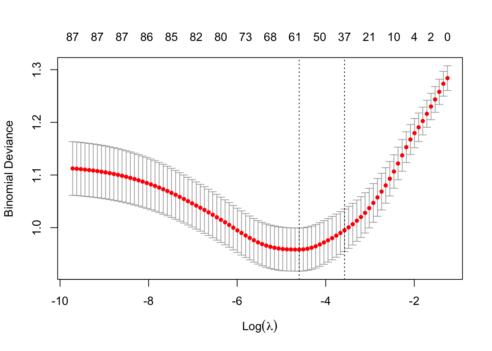
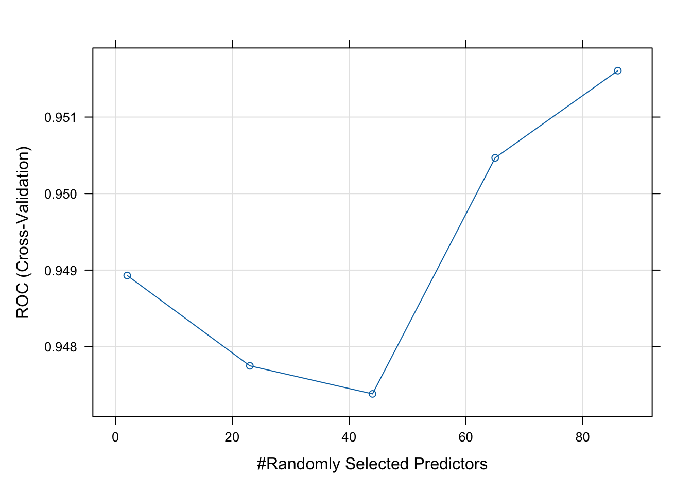

library(tidyverse)
library(caret)
library(glmnet)
library(MASS)
library(randomForest)Exercise 5B - Solutions
- Load th R packages needed for analysis:
Summary Statistics
- Load in the dataset
Obt_Perio_ML.Rdataand inspect it.
load(file = "../data/Obt_Perio_ML.Rdata")- Do some basic summary statistics and distributional plots to get a feel for the data. Which types of variables do we have?
# Reshape data to long format for ggplot2
long_data <- optML %>%
dplyr::select(where(is.numeric)) %>%
pivot_longer(cols = everything(),
names_to = "variable",
values_to = "value")
# Plot histograms for each numeric variable in one grid
ggplot(long_data, aes(x = value)) +
geom_histogram(binwidth = 0.5, fill = "#9395D3", color ='grey30') +
facet_wrap(~ variable, scales = "free") +
theme_minimal()
- Make count tables of your categorical/factor variables, are they balanced?
# Count observations per level/group for each categorical variable
factor_counts <- optML[,-1] %>%
dplyr::select(where(is.character)) %>%
pivot_longer(everything(), names_to = "Variable", values_to = "Level") %>%
count(Variable, Level, name = "Count")
factor_counts# A tibble: 34 × 3
Variable Level Count
<chr> <chr> <int>
1 Any.SAE. No 865
2 Any.SAE. Yes 135
3 Any.live.ptb.sb.sp.ab.in.ab No 432
4 Any.live.ptb.sb.sp.ab.in.ab Yes 568
5 Any.stillbirth No 894
6 Any.stillbirth Yes 106
7 Bact.vag No 877
8 Bact.vag Yes 123
9 Clinic KY 247
10 Clinic MN 289
# ℹ 24 more rowsPart 1: Elastic Net Regression
As you will use the response
Preg.ended...37.wk, you should remove the other five outcome measures from your dataset.Elastic net regression can be sensitive to large differences in the range of numeric/integer variables, as such these variables should be scaled. Scale all numeric/integer variables in your dataset.
optML <- optML %>%
dplyr::select(-c(Apgar1, Apgar5, GA.at.outcome, Birthweight, Any.SAE.)) %>%
mutate(across(where(is.numeric), scale))- Split your dataset into train and test set, you should have 70% of the data in the training set and 30% in the test set. How you chose to split is up to you, BUT afterwards you should ensure that for the categorical/factor variables all levels are represented in both sets.
# Set seed
set.seed(123)
# Training set
train <- optML %>%
sample_frac(0.70)
# Check group levels
train_counts <- train[,-1] %>%
dplyr::select(where(is.character)) %>%
pivot_longer(everything(), names_to = "Variable", values_to = "Level") %>%
count(Variable, Level, name = "Count")
train_counts# A tibble: 32 × 3
Variable Level Count
<chr> <chr> <int>
1 Any.live.ptb.sb.sp.ab.in.ab No 302
2 Any.live.ptb.sb.sp.ab.in.ab Yes 398
3 Any.stillbirth No 629
4 Any.stillbirth Yes 71
5 Bact.vag No 620
6 Bact.vag Yes 80
7 Clinic KY 169
8 Clinic MN 201
9 Clinic MS 189
10 Clinic NY 141
# ℹ 22 more rowstest <- anti_join(optML, train, by = 'PID')
# Check group levels
#test_counts <- optML[,-1] %>%
# dplyr::select(where(is.character)) %>%
# pivot_longer(everything(), names_to = "Variable", values_to = "Level") %>%
# count(Variable, Level, name = "Count")
#test_counts- After dividing into train and test set pull out the response variable
Preg.ended...37.wkinto its own vector for both datasets, name these:y_trainandy_test.
y_train <- train %>%
pull(Preg.ended...37.wk)
y_test <- test %>%
pull(Preg.ended...37.wk)- Remove the response variable
Preg.ended...37.wkfrom the train and test set, as well asPID(if you have not already done so), as we should obviously not use this for training or testing.
train <- train %>%
dplyr::select(-c(PID, Preg.ended...37.wk))
test <- test %>%
dplyr::select(-c(PID, Preg.ended...37.wk))You will employ the package glmnet to perform Elastic Net Regression. The main function from this package is glmnet() which we will use to fit the model. Additionally, you will also perform cross validation with cv.glmnet() to obtain the best value of the model hyper-parameter, lambda (λ).
As we are working with a mix of categorical and numerical predictors, it is advisable to dummy-code the variables, you can easily do this by creating a model matrix for both test and train set.
- Create the model matrix needed for input to
glmnet()andcv.glmnet():
modTrain <- model.matrix(~ .- 1, data = train)
modTest <- model.matrix(~ .- 1, data = test)Note that the - 1 in the model.matrix() formula which means, drop the intercept from the matrix.
- Create your Elastic Net Regression model with
glmnet().
EN_model <- glmnet(modTrain, y_train, alpha = 0.5, family = "binomial")- Use
cv.glmnet()to attain the best value of the hyperparameter lambda (λ). Remember to set a seed for reproducible results.
set.seed(123)
cv_model <- cv.glmnet(modTrain, y_train, alpha = 0.5, family = "binomial")- Plot all the values of lambda tested during cross validation by calling
plot()on the output of yourcv.glmnet(). Extract the best lambda value from thecv.glmnet()model and save it as an object.
plot(cv_model)
bestLambda = cv_model$lambda.minNow, lets see how well your model performed.
- Predict if a individual is likely to give birth before the 37th week using your model and your test set. See pseudo-code below
y_pred <- predict(EN_model, s = bestLambda, newx = modTest, type = 'class')- Just like for the logistic regression model you can calculate the accuracy of the prediction by comparing it to
y_testwithconfusionMatrix(). Do you have a good accuracy? N.B look at the 2x2 contingency table, what does it tell you?
y_pred <- as.factor(y_pred)
caret::confusionMatrix(y_pred, y_test)Confusion Matrix and Statistics
Reference
Prediction 0 1
0 175 37
1 30 58
Accuracy : 0.7767
95% CI : (0.7253, 0.8225)
No Information Rate : 0.6833
P-Value [Acc > NIR] : 0.0002222
Kappa : 0.4735
Mcnemar's Test P-Value : 0.4635483
Sensitivity : 0.8537
Specificity : 0.6105
Pos Pred Value : 0.8255
Neg Pred Value : 0.6591
Prevalence : 0.6833
Detection Rate : 0.5833
Detection Prevalence : 0.7067
Balanced Accuracy : 0.7321
'Positive' Class : 0
- Lastly, lets extract the variables which were retained in the model (e.g. not penalized out). We do this by calling the coefficient with
coef()on our model. See pseudo-code below.
coeffs <- coef(EN_model, s = bestLambda)
# Convert coefficients to a data frame for easier viewing
coeffsDat <- as.data.frame(as.matrix(coeffs)) %>%
rownames_to_column(var = 'VarName')- Make a plot that shows the absolute importance of the variables retained in your model. This could be barplot with variable names on the x-axis and the height of the bars denoting absolute size of coefficient).
# Make dataframe ready for plotting, remove intercept and coeffcients that are zero
coeffsDat <- coeffsDat %>%
mutate(AbsImp = abs(s1)) %>%
arrange(AbsImp) %>%
mutate(VarName = factor(VarName, levels=VarName)) %>%
filter(AbsImp > 0 & VarName != "(Intercept)")
# Plot
ggplot(coeffsDat, aes(x = VarName, y = AbsImp)) +
geom_bar(stat = "identity", fill = "#9395D3") +
coord_flip() +
labs(title = "Feature Importance for Elastic Net",
x = "Features",
y = "Absolute Coefficients") +
theme_classic()
- Now repeat what you just did above, but this time instead of using
Preg.ended...37.wkas outcome, try using a continuous variable, such asGA.at.outcome. N.B remember this means that you should evaluate the model using the RMSE and a scatter plot instead of the accuracy!
Part 2: Random Forest
Now, lets make a Random Forest. We will continue using the Obt_Perio_ML.Rdata with Preg.ended...37.wk as outcome.
- Just like in the section on EN above, remove the outcome variables you will not be using and split the dataset into test and train set - this time keep the outcome variable
Preg.ended...37.wkin the dataset. Remember to remove thePIDcolumn before training!
load(file = "../data/Obt_Perio_ML.Rdata")
optML <- optML %>%
mutate(Preg.ended...37.wk = factor(Preg.ended...37.wk, levels = c(0, 1), labels = c("No", "Yes")))optML <- optML %>%
dplyr::select(-c(Apgar1, Apgar5, GA.at.outcome, Birthweight, Any.SAE.))set.seed(123)
# Training set
train <- optML %>%
sample_frac(0.70)
test <- anti_join(optML, train, by = 'PID')
train <- train %>%
dplyr::select(-PID)
test <- test %>%
dplyr::select(-PID)- Set up a Random Forest model with cross-validation. See pseudo-code below. Remember to set a seed.
set.seed(123)
# Set up cross-validation: 5-fold CV
RFcv <- trainControl(
method = "cv",
number = 5,
classProbs = TRUE,
summaryFunction = twoClassSummary,
savePredictions = "final"
)
# Train Random Forest
set.seed(123)
rf_model <- train(
Preg.ended...37.wk ~ ., # formula interface
data = train,
method = "rf", # random forest
trControl = RFcv,
metric = "ROC", # optimize AUC
#preProcess = c("center", "scale"), # optional
tuneLength = 5 # try 5 different mtry values
)
# Model summary
print(rf_model)Random Forest
700 samples
82 predictor
2 classes: 'No', 'Yes'
No pre-processing
Resampling: Cross-Validated (5 fold)
Summary of sample sizes: 561, 560, 559, 560, 560
Resampling results across tuning parameters:
mtry ROC Sens Spec
2 0.9489303 1.0000000 0.8617908
23 0.9477493 0.9870033 0.8744681
44 0.9473824 0.9783544 0.8743794
65 0.9504678 0.9762038 0.8786348
86 0.9516068 0.9675316 0.8786348
ROC was used to select the optimal model using the largest value.
The final value used for the model was mtry = 86.- Plot your model fit. How does your model improve when you add 10, 20, 30, etc. predictors?
# Best parameters
rf_model$bestTune mtry
5 86# Plot performance
plot(rf_model)
- Use your test set to evaluate your model performance. How does the random forest compare to the elastic net regression?
# Predict class probabilities
y_pred <- predict(rf_model, newdata = test, type = "prob")
y_pred <- as.factor(ifelse(y_pred$Yes > 0.5, "Yes", "No"))
caret::confusionMatrix(y_pred, test$Preg.ended...37.wk)Confusion Matrix and Statistics
Reference
Prediction No Yes
No 201 5
Yes 4 90
Accuracy : 0.97
95% CI : (0.9438, 0.9862)
No Information Rate : 0.6833
P-Value [Acc > NIR] : <2e-16
Kappa : 0.9305
Mcnemar's Test P-Value : 1
Sensitivity : 0.9805
Specificity : 0.9474
Pos Pred Value : 0.9757
Neg Pred Value : 0.9574
Prevalence : 0.6833
Detection Rate : 0.6700
Detection Prevalence : 0.6867
Balanced Accuracy : 0.9639
'Positive' Class : No
- Extract the predictive variables with the greatest importance from your fit.
varImpOut <- varImp(rf_model)
varImpOut$importance Overall
ClinicMN 0.18909072
ClinicMS 0.56110098
ClinicNY 0.15858900
GroupT 1.45905966
Age 11.42288132
Race 9.22196555
EducationLT 8 yrs 0.41750850
EducationMT 12 yrs 11.85031098
Public.AsstceYes 0.63015030
BMI 19.11386005
Use.TobYes 0.99283838
N.prev.preg 8.66327455
Live.PTBYes 1.90249878
Any.stillbirthYes 0.69824534
Any.live.ptb.sb.sp.ab.in.abYes 2.14201188
EDC.necessary.Yes 1.57892536
N.qualifying.teeth 7.20650864
BL.GE 17.82828761
BL..BOP 23.06226470
BL.PD.avg 7.22847781
BL..PD.4 18.48692714
BL..PD.5 9.67112933
BL.CAL.avg 5.40807455
BL..CAL.2 11.58688359
BL..CAL.3 8.40695616
BL.Calc.I 17.19261990
BL.Pl.I 19.42346211
V3.GE 8.42113275
V3..BOP 12.18607885
V3.PD.avg 10.61031531
V3..PD.4 11.86666251
V3..PD.5 6.59306632
V3.CAL.avg 6.82066411
V3..CAL.2 7.21362679
V3..CAL.3 5.71890063
V3.Calc.I 11.58388875
V3.Pl.I 10.55930596
V5.GE 20.66204194
V5..BOP 15.53862584
V5.PD.avg 11.16578456
V5..PD.4 18.86650358
V5..PD.5 11.04635889
V5.CAL.avg 20.15121437
V5..CAL.2 11.41602616
V5..CAL.3 16.09076266
V5.Calc.I 11.54489244
V5.Pl.I 33.77721900
N.PAL.sites1 0.30102747
N.PAL.sites3-33 0.02699399
Bact.vagYes 0.00000000
Gest.diabYes 13.30801472
UTIYes 2.20652812
Pre.eclampYes 100.00000000
BL.Anti.inf 1.12006598
BL.Antibio 0.71813039
V3.Anti.inf 16.87781640
V3.Antibio 3.96055984
V3.Bac.vag 0.82058981
V5.Anti.inf 0.70840871
V5.Antibio 2.98310227
V5.Bac.vag 0.96346710
X..Vis.Att 91.66602108
X1st.Miss.Vis 7.45969433
OAA1 17.23251695
OCR1 17.29567997
OFN1 13.70133570
OPG1 37.49747426
OPI1 52.36373528
OTD1 35.72848417
OTF1 18.46466432
OCRP1 30.95682490
OPGE21 53.06450992
OMMP91 37.53844169
OFIBRIN1 27.11593061
OAA5 32.97032484
OCR5 56.47689384
OFN5 42.82204261
OPG5 51.50041594
OPI5 42.14561622
OTD5 17.40892981
OTF5 43.89030628
OCRP5 21.89240785
OPGE25 31.91583573
OMMP95 30.38422141
ETXU_CAT5 4.11741686
OFIBRIN5 31.00021727varImportance <- as.data.frame(as.matrix(varImpOut$importance)) %>%
rownames_to_column(var = 'VarName') %>%
arrange(desc(Overall))
varImportance VarName Overall
1 Pre.eclampYes 100.00000000
2 X..Vis.Att 91.66602108
3 OCR5 56.47689384
4 OPGE21 53.06450992
5 OPI1 52.36373528
6 OPG5 51.50041594
7 OTF5 43.89030628
8 OFN5 42.82204261
9 OPI5 42.14561622
10 OMMP91 37.53844169
11 OPG1 37.49747426
12 OTD1 35.72848417
13 V5.Pl.I 33.77721900
14 OAA5 32.97032484
15 OPGE25 31.91583573
16 OFIBRIN5 31.00021727
17 OCRP1 30.95682490
18 OMMP95 30.38422141
19 OFIBRIN1 27.11593061
20 BL..BOP 23.06226470
21 OCRP5 21.89240785
22 V5.GE 20.66204194
23 V5.CAL.avg 20.15121437
24 BL.Pl.I 19.42346211
25 BMI 19.11386005
26 V5..PD.4 18.86650358
27 BL..PD.4 18.48692714
28 OTF1 18.46466432
29 BL.GE 17.82828761
30 OTD5 17.40892981
31 OCR1 17.29567997
32 OAA1 17.23251695
33 BL.Calc.I 17.19261990
34 V3.Anti.inf 16.87781640
35 V5..CAL.3 16.09076266
36 V5..BOP 15.53862584
37 OFN1 13.70133570
38 Gest.diabYes 13.30801472
39 V3..BOP 12.18607885
40 V3..PD.4 11.86666251
41 EducationMT 12 yrs 11.85031098
42 BL..CAL.2 11.58688359
43 V3.Calc.I 11.58388875
44 V5.Calc.I 11.54489244
45 Age 11.42288132
46 V5..CAL.2 11.41602616
47 V5.PD.avg 11.16578456
48 V5..PD.5 11.04635889
49 V3.PD.avg 10.61031531
50 V3.Pl.I 10.55930596
51 BL..PD.5 9.67112933
52 Race 9.22196555
53 N.prev.preg 8.66327455
54 V3.GE 8.42113275
55 BL..CAL.3 8.40695616
56 X1st.Miss.Vis 7.45969433
57 BL.PD.avg 7.22847781
58 V3..CAL.2 7.21362679
59 N.qualifying.teeth 7.20650864
60 V3.CAL.avg 6.82066411
61 V3..PD.5 6.59306632
62 V3..CAL.3 5.71890063
63 BL.CAL.avg 5.40807455
64 ETXU_CAT5 4.11741686
65 V3.Antibio 3.96055984
66 V5.Antibio 2.98310227
67 UTIYes 2.20652812
68 Any.live.ptb.sb.sp.ab.in.abYes 2.14201188
69 Live.PTBYes 1.90249878
70 EDC.necessary.Yes 1.57892536
71 GroupT 1.45905966
72 BL.Anti.inf 1.12006598
73 Use.TobYes 0.99283838
74 V5.Bac.vag 0.96346710
75 V3.Bac.vag 0.82058981
76 BL.Antibio 0.71813039
77 V5.Anti.inf 0.70840871
78 Any.stillbirthYes 0.69824534
79 Public.AsstceYes 0.63015030
80 ClinicMS 0.56110098
81 EducationLT 8 yrs 0.41750850
82 N.PAL.sites1 0.30102747
83 ClinicMN 0.18909072
84 ClinicNY 0.15858900
85 N.PAL.sites3-33 0.02699399
86 Bact.vagYes 0.00000000- Make a logistic regression using the same dataset (you already have your train data, test data). How do the results of Elastic Net regression and Random Forest compare to the output of your glm.
# Model
model1 <- glm(Preg.ended...37.wk ~ ., data = train, family = 'binomial')
summary(model1)
Call:
glm(formula = Preg.ended...37.wk ~ ., family = "binomial", data = train)
Coefficients:
Estimate Std. Error z value Pr(>|z|)
(Intercept) -1.9801008 3.5631571 -0.556 0.578406
ClinicMN 0.8699594 0.9877024 0.881 0.378431
ClinicMS 1.2721416 1.2484124 1.019 0.308199
ClinicNY -0.0233753 1.1718702 -0.020 0.984086
GroupT 0.2552749 0.4269771 0.598 0.549930
Age 0.0471903 0.0335723 1.406 0.159834
Race 0.0270915 0.1191646 0.227 0.820156
EducationLT 8 yrs -0.3522278 0.4337815 -0.812 0.416795
EducationMT 12 yrs 0.9619565 0.3382249 2.844 0.004453 **
Public.AsstceYes 0.1744424 0.3682501 0.474 0.635709
BMI -0.0059403 0.0207071 -0.287 0.774209
Use.TobYes -0.7790371 0.4611233 -1.689 0.091136 .
N.prev.preg 0.0907921 0.0875952 1.036 0.299971
Live.PTBYes 0.4974383 0.3939930 1.263 0.206749
Any.stillbirthYes 0.0394863 0.5028921 0.079 0.937416
Any.live.ptb.sb.sp.ab.in.abYes 0.7209060 0.3153297 2.286 0.022243 *
EDC.necessary.Yes -0.5066162 0.2920429 -1.735 0.082788 .
N.qualifying.teeth -0.0641091 0.0489558 -1.310 0.190355
BL.GE -1.1090235 0.8611565 -1.288 0.197805
BL..BOP 0.0237832 0.0158909 1.497 0.134482
BL.PD.avg -1.3394039 1.5261519 -0.878 0.380142
BL..PD.4 0.0270065 0.0434124 0.622 0.533881
BL..PD.5 -0.0111623 0.0409779 -0.272 0.785316
BL.CAL.avg -1.8181770 1.3705913 -1.327 0.184653
BL..CAL.2 0.0323940 0.0268926 1.205 0.228370
BL..CAL.3 0.0219636 0.0364035 0.603 0.546285
BL.Calc.I 1.0264775 0.4900990 2.094 0.036222 *
BL.Pl.I 0.4284264 0.5538300 0.774 0.439185
V3.GE 0.3363164 0.9659430 0.348 0.727709
V3..BOP 0.0039164 0.0153008 0.256 0.797982
V3.PD.avg -0.4582441 1.6225147 -0.282 0.777615
V3..PD.4 -0.0068317 0.0521838 -0.131 0.895841
V3..PD.5 -0.0096056 0.0535798 -0.179 0.857721
V3.CAL.avg -0.4164430 1.5081045 -0.276 0.782443
V3..CAL.2 0.0155303 0.0318743 0.487 0.626091
V3..CAL.3 -0.0261133 0.0332473 -0.785 0.432204
V3.Calc.I 0.9970600 0.6851140 1.455 0.145581
V3.Pl.I 0.6112294 0.5469290 1.118 0.263752
V5.GE -0.7771494 0.8889963 -0.874 0.382016
V5..BOP -0.0072967 0.0144145 -0.506 0.612712
V5.PD.avg 3.5117696 1.8027983 1.948 0.051420 .
V5..PD.4 -0.0082073 0.0489280 -0.168 0.866785
V5..PD.5 -0.0355945 0.0508981 -0.699 0.484346
V5.CAL.avg 3.1106597 1.2473092 2.494 0.012635 *
V5..CAL.2 -0.0985741 0.0273705 -3.601 0.000316 ***
V5..CAL.3 0.0276759 0.0336256 0.823 0.410473
V5.Calc.I -0.8310781 0.7147070 -1.163 0.244901
V5.Pl.I -1.3386745 0.5689180 -2.353 0.018622 *
N.PAL.sites1 -0.6335845 0.5276496 -1.201 0.229841
N.PAL.sites3-33 -2.3314407 0.7140055 -3.265 0.001093 **
Bact.vagYes -0.8337214 0.4775818 -1.746 0.080861 .
Gest.diabYes 1.8307633 0.6214981 2.946 0.003222 **
UTIYes 0.8217784 0.3467958 2.370 0.017806 *
Pre.eclampYes 2.5667547 0.4750008 5.404 6.53e-08 ***
BL.Anti.inf 0.8412653 0.4944466 1.701 0.088863 .
BL.Antibio -0.6875282 0.6342490 -1.084 0.278363
V3.Anti.inf -0.9004613 0.4604358 -1.956 0.050504 .
V3.Antibio -0.4818871 0.5717811 -0.843 0.399350
V3.Bac.vag -1.1979582 0.7331481 -1.634 0.102261
V5.Anti.inf 0.0310980 0.3992701 0.078 0.937918
V5.Antibio 0.5505397 0.5249561 1.049 0.294300
V5.Bac.vag -0.6982592 0.6012739 -1.161 0.245520
X..Vis.Att -0.9278747 0.2340979 -3.964 7.38e-05 ***
X1st.Miss.Vis 0.0035752 0.0046934 0.762 0.446212
OAA1 0.0102592 0.0319071 0.322 0.747805
OCR1 -0.0357343 0.0771958 -0.463 0.643432
OFN1 -0.1560565 0.0872115 -1.789 0.073550 .
OPG1 -0.0245098 0.0150722 -1.626 0.103915
OPI1 -0.1299377 0.0753679 -1.724 0.084700 .
OTD1 0.1455536 0.0753071 1.933 0.053261 .
OTF1 0.0222242 0.0494148 0.450 0.652892
OCRP1 -0.0130960 0.0174791 -0.749 0.453712
OPGE21 0.0013963 0.0004603 3.033 0.002418 **
OMMP91 0.4693496 0.3313598 1.416 0.156648
OFIBRIN1 0.0204104 0.0109849 1.858 0.063164 .
OAA5 -0.0408890 0.0320141 -1.277 0.201524
OCR5 -0.2515288 0.0787526 -3.194 0.001404 **
OFN5 0.0386100 0.0755088 0.511 0.609120
OPG5 0.0051944 0.0187909 0.276 0.782216
OPI5 0.0861261 0.0702225 1.226 0.220020
OTD5 -0.1116362 0.0963493 -1.159 0.246594
OTF5 0.0191157 0.0362798 0.527 0.598265
OCRP5 0.0228487 0.0168666 1.355 0.175523
OPGE25 -0.0020950 0.0006323 -3.313 0.000922 ***
OMMP95 0.2742171 0.4020384 0.682 0.495197
ETXU_CAT5 -0.1575243 0.1491241 -1.056 0.290817
OFIBRIN5 0.0056474 0.0048967 1.153 0.248790
---
Signif. codes: 0 '***' 0.001 '**' 0.01 '*' 0.05 '.' 0.1 ' ' 1
(Dispersion parameter for binomial family taken to be 1)
Null deviance: 897.45 on 699 degrees of freedom
Residual deviance: 506.94 on 613 degrees of freedom
AIC: 680.94
Number of Fisher Scoring iterations: 6# Filter for significant p-values and convert to tibble
model1out <- coef(summary(model1)) %>%
as.data.frame() %>%
rownames_to_column(var = 'VarName') %>%
filter(`Pr(>|z|)` <= 0.05 & VarName != "(Intercept)")
# Compare output from Elastic Net with output from glm model
intersect(as.character(coeffsDat$VarName), model1out$VarName) %>%
sort() [1] "Any.live.ptb.sb.sp.ab.in.abYes" "BL.Calc.I"
[3] "EducationMT 12 yrs" "Gest.diabYes"
[5] "N.PAL.sites3-33" "OCR5"
[7] "OPGE21" "OPGE25"
[9] "Pre.eclampYes" "UTIYes"
[11] "V5.CAL.avg" "V5.Pl.I"
[13] "X..Vis.Att"